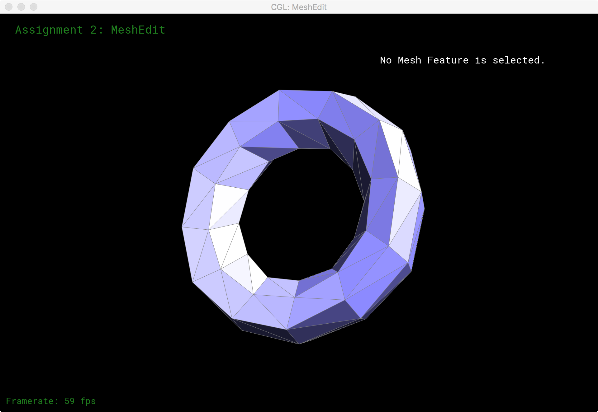

Overview
In this project, I first used de Casteljau's algorithm to implement the drawing of Bezier curves, and by extension, Bezier surfaces. This allowed for the rendering of 3D meshes whose surfaces are specified by control points and cages. To improve the appearance of the shading of 3D meshes, I implemented area weighted vertex normals, defining a normal at each vertex relative the those of the adjacent faces. Using these, interpolating the normal at a point on a face provided for a much smoother and realistic shading for most meshes.
Following this, I also added the ability for the viewer to flip and split edges in a 3D mesh through modification of the halfedge data structure. Now having these mesh operations, it was possible to implement mesh upsampling to improve the resolution of the mesh using subdivision surfaces, essentially splitting every edge and updating the vertices based on the past locations. Using this, simple meshes like that of torus/input.dae could be upsampled into something that looks like a smooth torus.
Finally I implemented in GLSL the Phong shading model. Here I calculated the vectors showing the direction of the light and the direction of the viewer, measuring how far off the viewing vector was from the light being directly reflected along it using the bisector of the two vectors. After combining this with the calculations for ambient and diffuse lighting, selecting proper constants, the meshes could appear to have specular highlights on top of the diffuse reflection and ambient light.
I've learned a great deal about the considerations one needs to have when designing a mesh to model an object. Given the way upsampling using subdivision surfaces works, a 3D artist must be careful in keeping the topology of their mesh exactly as they wanted to avoid corners and edges being pushed in odd directions, as with the cube. Additionally, the project got be thinking about how the the entire mesh can really be enocded with just using halfedges, the faces, edges, and vertices all able to be derived by just the halfedge structure, keeping the memory usage much smaller than a naive implementation literally storing the mesh elements as one would expect. It was really interesting thinking about how to traverse the data structure, having to consider movement on a plane as opposed to just following a pointer in a linked list. I think most importantly this project brought home to me how clever things like area weighted vector normals and shaders and approximate real life with relatively little overhead and simple calculation based on how our world works, fooling us into seeing the polygons and meshes as eral objects rather than just a virtual model. It was cool having seen the effect of vertex normals in so many old games in my childhood and finally understanding why they look as they do.
Section I: Bezier Curves and Surfaces
Part 1: Bezier curves with 1D de Casteljau subdivision
In this part, I implemented de Casteljau's algorithm to draw a one dimensional Bezier curve. The algorithm is relatively simple, first connecting your n control points with n-1 line segments. Parametrizing the curve with a variable t s.t. 0 <= t <= 1, we linearly interpolate the point on each line segment using t, resulting in n-1 new points. We repeat this process on these new points, until we are left with only a single point. This remaining point is then the point on the curve at t. Performing this operation over the range of t then gives us the entire curve. Below I step through this process with 6 control points.
To implement this algorithm given a vector of the starting control points, we first create a new vector to hold our new points. Then we just iterate through each pair of points in order, running a linaer interpolation with t between each of these pairs. We push this new point onto our new vector. We repeat until we have a single point in our vector, giving us the point on the Bezier curve at t.
|
|

|

|
|

|
|
By scrolling, I the value of t can be modified:
| t = 0 | t ~= 0.25 | t = 0.5 | t ~= 0.75 | t = 1 |
|---|---|---|---|---|
Here is an animated gif showing how the interpolated point follows the curve as we modify t on a new set of control points:
Part 2: Bezier surfaces with separable 1D de Casteljau subdivision
In part 2, I extended de Casteljau's algorithm to trace out a Bezier surface. Now, we are given a control grid, rather than a line of points and two parameters, u and v, rather than just a single one. First, for every row of points in the control grid, we perform the one dimensional de Casteljau's algorithm with the process described in part 1 with the first parameter, u. This yields another vector of points, one lying on each of the one dimensional Bezier curves the resulted from the rows. Now we apply de Casteljau's algorithm over this vector, using the second parameter, v. The resulting point is then the point on the Bezier surface at u, v. Performing this over all points u, v s.t. 0 <= u <= 1 and 0 <= v <= 1, we can find all points belonging to the Bezier surface defined by the control grid.
Implementation wise, we can just repeatedly call the one dimensional algorithm, implemented in the helper function Vector3D BezierPatch::evaluate1D, over every row in the given control grid, storing each of the resulting points in a vector. We then run the same function again with this new vector to get our final point.
teapot.bezSection II: Sampling
Part 3: Average normals for half-edge meshes
In part 3, to make the mesh look more realistic and smooth out faces, we had to find the average normals for vertices. Using just face normals, the mesh looks very computerized and polygonlike when shaded. Defining the normal vector at a vertex as the average normal of its adjacent faces, and then interpolating the vertex normals over the face when shading gives a much more realistic result, smoothing over the faces and suddent normal vector changes. This works best for meshes without many large, harsh angles, like those in cube.dae
To implement this, in the function Vector3D Vertex::normal, we must walk through each of the surrounding edges using the half edge data structure like so:
|
|
|
|
Using the vertex of this halfedge, we now have an edge of one of the adjacent faces as a vector from the vector we are rotating around to this new vector.
|
|
|
Now the vertex of this halfedge gives us the other edge of the same face. Taking the cross product of these two edge vectors then gives us an area weighted normal vector for the face. We repeat the next->twin method above to until we wind back to our start position, summing the normal vectors as we go. Normalizing at the end then gives us an area weighted average normal vector of the surrounding faces for the vector.
Here're the results:
|
|
|
This part actually frustrated me for a while. My normals would always be zero vectors in my first implementation, and I could not figure out why for the longest time. The problem was that I was using the model that the vertex of a halfedge was the one pointed to, like Ren talked about in lecture, but the data structure was actually the opposite way around. That meant that I was always subtracting the point from itself in my traversal, giving me the zero vectors. Going back and reading the data structure notes helped solve this problem relatively quickly.
Part 4: Half-edge flip
In part 4, Edge flipping was implemented, in which an edge connecting two opposite vertices in a quadralateral (between two triangle faces) is make to connect the other pair of vertices. To do so, mainly only pointer reassignments were needed. I first found the half edges along the edge to flip. With these half edges, I drew a diagram with every affected object so that I would know where to place my pointers. To implement this, I just set every pointer for every object to where it should be according to the diagram I had made:
|
|
|
It's easy to see now what pointers should be allocated where. All that has to be done now is to find references to all affect objects (the 6 half edges, 2 faces, 4 vertices, and edge) and set their poitners. For example, for halfedge h0, we would set it's pointers by using the setNeighbors method like so: h0->setNeighbors(h31, h1, v2, e0, f0); After setting all halfedges correctly, we just need to make sure that the edges, vertices, and faces are pointing to appropriate halfedges.
Edge flips in action:
|
|
|
For a long time, I would get a single edge that would be unselectable following a flip. For the longest time, I could not figure out why, drawing the pointer diagram over several times. It turns out it was just a copy-paste typo and I was setting a halfedge's edge to be some other halfedge's edge. Not really a debugging quest, but it still baffles me how I missed it so many times when checking my code. Otherwise things went pretty smoothly by just drawing out the what should be connected to what and setting all the pointers accordingly.
Part 5: Half-edge split
In part 5, splitting of edges was implemented, where given an edge, a new vertex is created at its midpoint. From this vertex, two new edges are drawn to the two vertices not adjacent to the original edge. This splits two faces into four. This means that unlike edge flipping, new components are being created: 1 new vertex, 6 new halfedges, 2 new faces, and 3 new edges. I approached this in the same way as the edge flipping problem, first drawing the diagram of every component, finding references to all needed componenets, and then assigning pointers as necessary:
|
|
|
In the same way as before, using the diagram, it is easy to tell what pointers should go where. After creating all the necessary elements, I just put back the pieces together to refelect the diagram.
|
|
|
|
|
|
Like part 5, no real debugging was needed here using the diagram, but I did have another typo where I was assigning the wrong edge to a halfedge, meaning one edge would always be unselectable after splitting. Just going back and checking pointers was enough to catch the bug. I also modified this part after part 6 to mark the newly created edges that don't lie on the original edge as such to simplify the code later on, credit to the instructor note on piazza.
Part 6: Loop subdivision for mesh upsampling
For part 6, I implemented loop subdivision, using the vertex update rules taught in class. The algorithm is fairly simple. First, for every vertex in the mesh, use the loop subdivision rule to compute its new position, storing it for now. That is, for any vertex v:
v->newPosition = (1 - n * u) * v->position + u * neighbor_position_sum
Where n is the degree of the v and u is 3 / 16 if n = 3, else it is 3 / (8n)
We then precompute the new positions of vertices that will be created by splitting an edge connecting two triangle faces, using the rule:
3/8 * (A + B) + 1/8 * (C + D)
where A and B are the positions of the vertices adjacent to the split edge and C and D are the positions of the other two vertices.
Having now the new positions of all vertices, we split every edge in the mesh in no particular order, marking the new edges and vertices. After splitting, any edge that connects one old and one new vertex is flipped. Finally we copy over the updated vertex positions and we have successfully subdivided our surface. Here are some examples:
|  | |||
We see that in general, the updated mesh is slightly smaller than the original, treating the original mesh like a control cage rather than filling the points exactly. Additionally, because the mesh division process is so regular, extraordinary vertices in the first subdivision remain so after future subdivisions. This is easy to see in the icosohedron mesh. We see that all vertices start off with five neighbors. After the first subdivision, these vertices are all extraordinary, the newly subdivided ones each having six. The effect is more noticible after an additional subdivision as the subdivisions create more and more hexagonal patters while the original vertices all remain with their original five.
Another thing of note is that sharp corners and edges may not behave as we want them to. They are also smoothed by the subdivision process, even in cases where they may be an important part of the shape we are modeling, like the cube mesh below. Other issues result when edges aren't evenly distributed in the mesh, making the subdivision behave in undesirable ways.
Here is what happens using the provided cube mesh:
| No preprocessing | Preprocessing |
|---|---|
We see for the cube mesh, without preprocessing, after updating, the resulting mesh is nonsymetric and more oblong, losing the cube-y shape. The vertices in the original cube mesh have differing numbers of edges and faces adjacent to them. Some have 3, some have 4, some have 5, and some have 6. This inequality makes the mesh uneven in subdividing as the number of adjacent vertices as well as their positions affects the new position of the updated vertex. Because the original cube mesh has only a single edge dividing each face, the vertices cannot distribute symmetrically the available edges. We can preprocess the mesh and split the edges so that all vertices have the same connectivity with adjacent vertices, in this case, they are all connected to the midpoints of adjacent faces and neighboring vertices, we get a symmetric subdivision. It is interesting to note that as before, extraordinary points in the first updated mesh remain so throughout future subdivisions.
Oddly enough, I had little issue with this portion of the project. Rigidly following the provided guidelines really made this rather painless to implement.
Section III: Shaders
Part 7: Fun with shaders
In this part, I implemented the Phong shading model using GLSL. All that had to be done really was implement the equation:
L = k_a * I_a + k_d * (I / (r * r)) * dot(n, l) + k_s * (I / (r * r)) * pow(dot(n, h), p)
I_a, I, p, k_a, k_d, and k_s are just constants chosen by me. I used I_a = vec3(0.0, 0.4, 0.8) and I = vec3(0.7, 0.7, 0.7) because I thought the blue looked nice. l is the light direction vector, found by subtracting the light position from the vertex (lightPos - vertex) and normalizing. r represents the distance from the light source, which could be found by taking the dotting the light direction vector with itself. h represents the bisector between the light direction vector and the view vector (eyePos - vertex), which can be found by just normalizing their sum.
My phong shading implementation on some meshes:
I had some trouble understanding the shader language at the beginning, but a reading the examples provided in the tutorial really helped in understanding the minute differences from C++.